Drivers' App for Trip management
Mobile application design for SLB drivers to view and manage their trips, access important information, and communicate with passengers.
Designing for affordance
Requirement
A mobile application for contract based cab drivers, to help communicate ride details and track live status. This is a part of a bigger system for in-house fleet management.
The app will be used by proffessional drivers who are already familiar with using mobile apps for navigation and communication, so the design should be intuitive and easy to use, with a focus on providing clear and concise information about the ride details and status.
The primary goal is to communicate clearly the multiple pickup/drops of combined trips, and to provide real time updates on the ride status, so that it can be tracked by admins primarily.
Understanding silent user needs
A fleet-driver app operates in a high cognitive load + high risk environment, where the user is constantly moving, has limited attention, interacts in bursts of 1–2 seconds, often uses one hand, works under stress/time pressure, and depends on continuous situational awareness.
In such cases these 2 UX Principles becomes non negotiable -
State-Based UI
Driver apps are mostly finite-state systems. Good system shows only the information needed for the current state. Use Progressive Disclosure to show information only when needed. For example, during the trip, the app should primarily show the navigation and ride details, while other features like settings or support should be easily accessible but not in the primary view.
Glanceability
The app should be designed to be glanceable, with clear and concise information that can be easily understood at a glance. Use of color, typography, and iconography must help to communicate important information quickly and effectively. The interface must be understandable within ~1 second glances.
State-aware interfaces designed for split-second understanding.
Solution Overview
The requirements were mostly simple but the design has to be very intuitive and clear, adheering to the principles of glanceability and state-based UI. There were few limitations in terms of technology -
No live navigation on the app, user need to go to their default map app and use navigation there.
2
3
similarly there were few assumptions made about the user's context and behavior, based on our discussions with stakeholders -
Users are familiar with using mobile apps for navigation and communication
Users will use the app while driving, while the phone is mounted on the dashboard
Users will primarily use the app for checking ride details and communicating with passengers, rather than for navigation.
In such cases these 2 UX Principles becomes non negotiable -
Now let’s see how we integrated these principles in out solution. we will discuss this through the 2 states of the UI, which are Idle State and Driving State
Idle State
Idle state means when there is no active trip which can be assumed as the vehicle is at rest and the driver is in calm state to go through the details of the upcoming rides. Hence in this state the UI is bit more detailed.
Home Screen
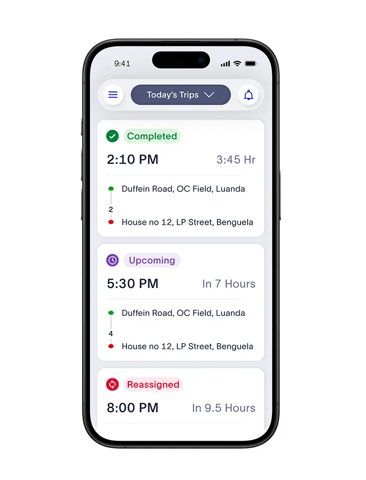
Trip Detail View
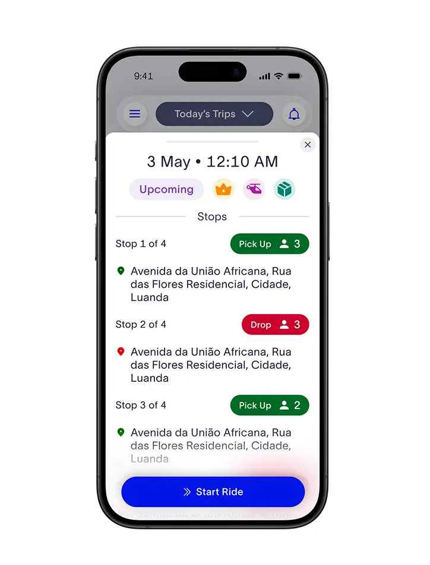
Driving State
In contrast to the idle state, driving state demands, less attention. A driver’s focus belongs on the road — the UI should respect that. Hence we changed the trip cards designs to show less information if an ongoing trip detected.
Home Screen
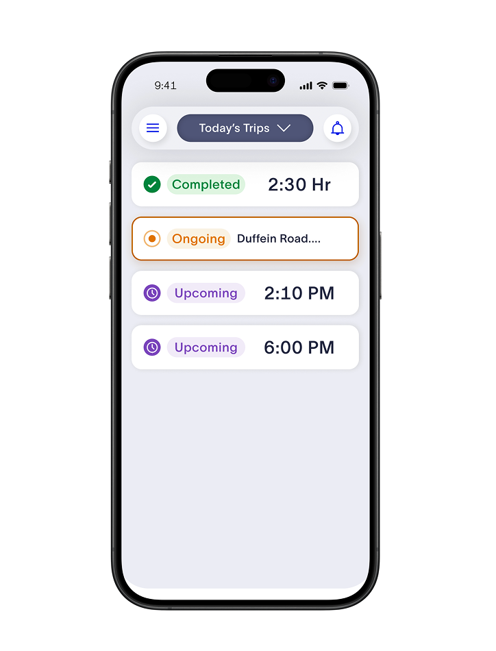
Ongiong Trip View
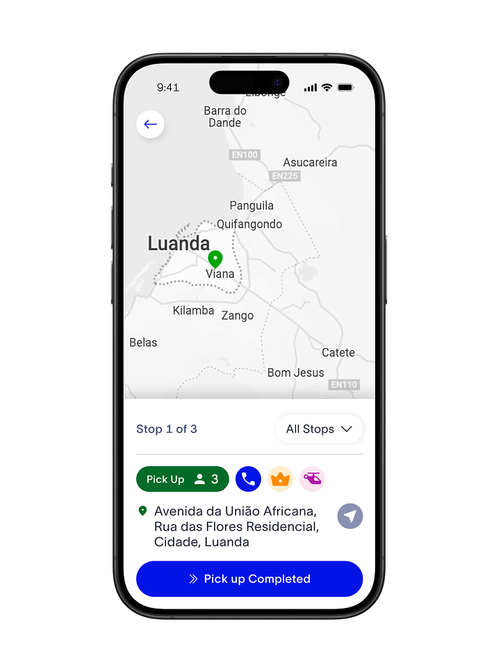
Predictable interactions that build trust.
Drivers should never misinterpret interaction possibilities & visual cues while moving.
The design should ensure that all interactive elements are clearly distinguishable and that the user can easily understand what actions are possible at any given moment. This is crucial for building trust with the users, as they need to feel confident that they can interact with the app safely while driving. For example, buttons should be large enough to be easily tapped, and important information should be prominently displayed to avoid any confusion or misinterpretation.
Here is a list of key design implications:
Swipe action buttons feel directional
Buttons look tappable, having a primary colour always
Pickup related supplementary information(Colorful Icons) shown at their relevant pickup time and drop time
Pickup and drop with number of passengers are consistent with green and red semantic color everywhere
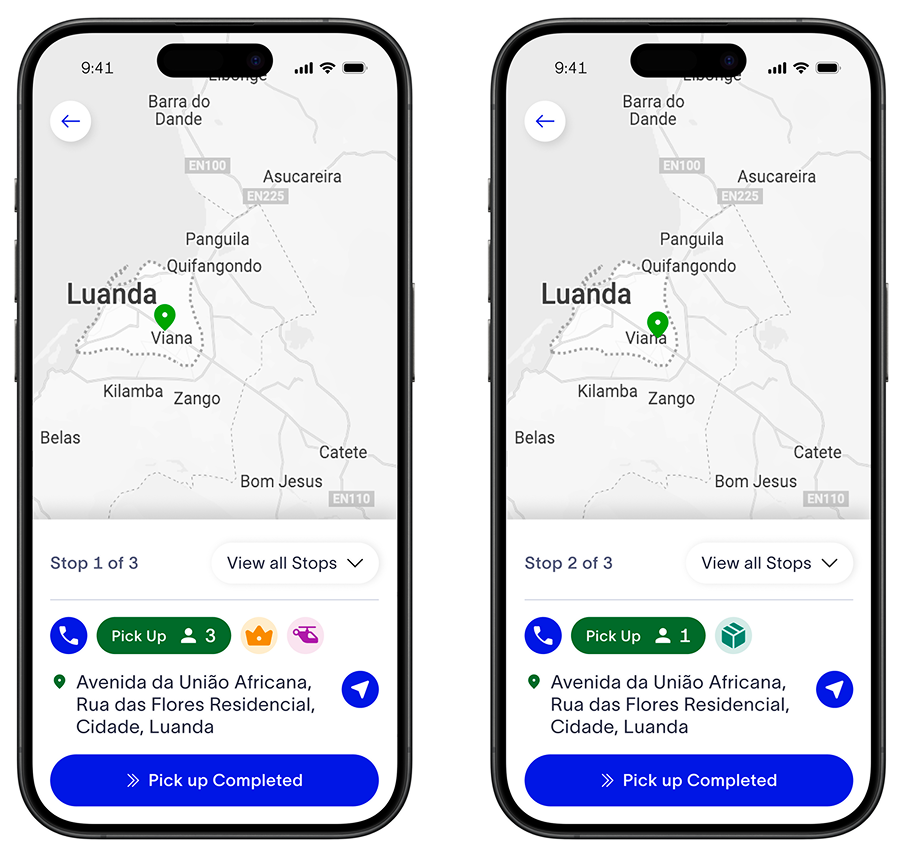
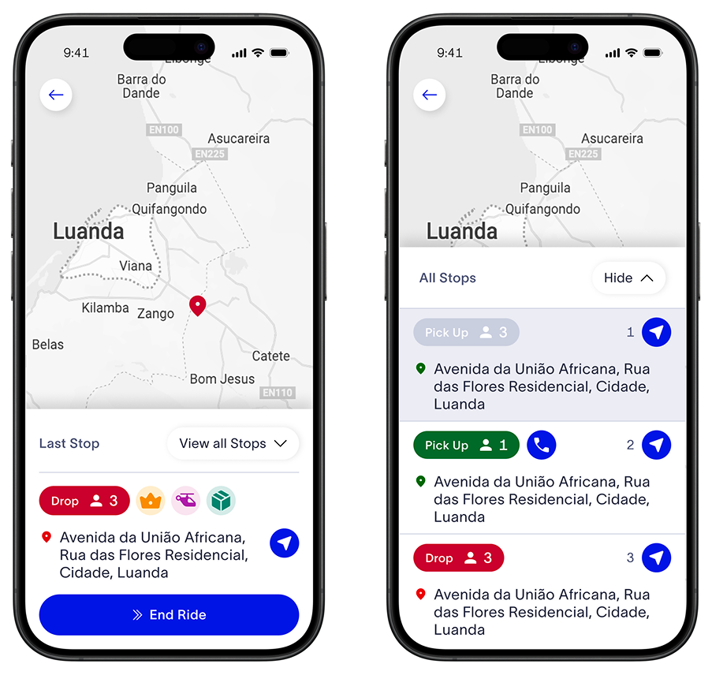
After the first pilot, we observed another issue: the “Call” and “View All Stops” actions were positioned too close to each other, leading to unintended taps. While the spacing may seem sufficient by standard UI guidelines, in our context—where users are often in motion and distracted—this proximity becomes a critical usability concern.
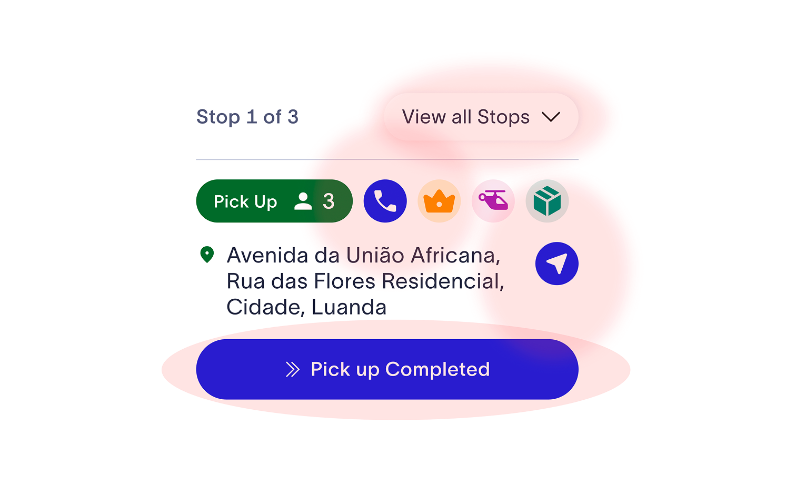
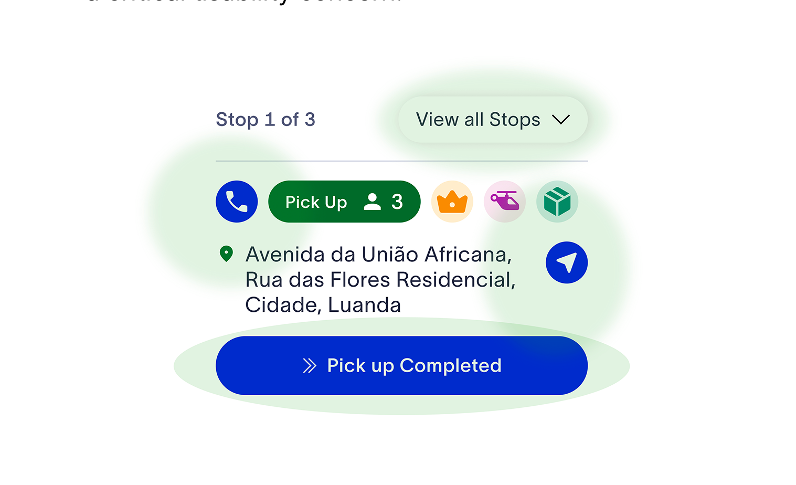
Only the right information, at the right moment.
The trip cards have small variations based on the states, to keep the cognitive load low. For trips that are scheduled for today, date is redundant information to display, instead we decided to show ETA and Trips duration for upcoming and completed trips respectively. Sometimes reading time can take more mental load rather that how many hours left to the trip.
Similarly when ongoing trip is there, the card compresses and hide the locations. User can still click and see the details. But during driving, the most important thing for a driver would be to see when the next trip.
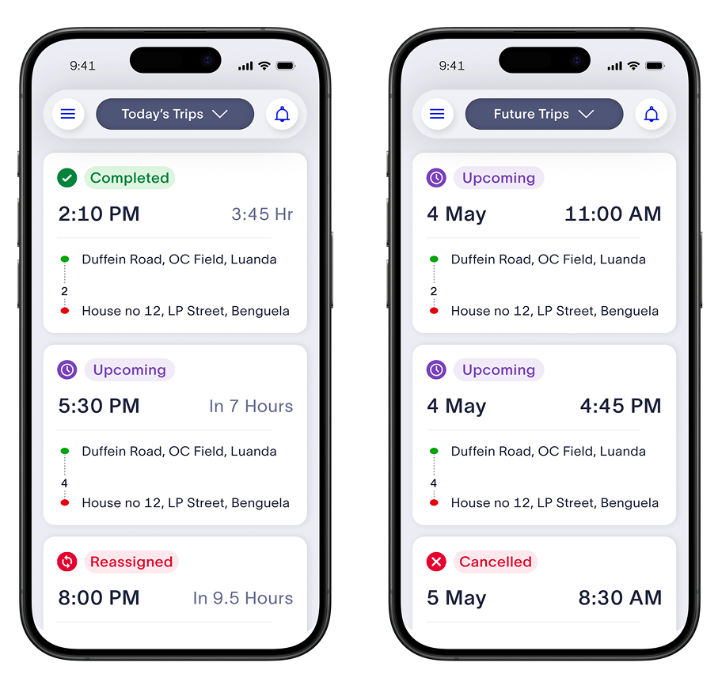
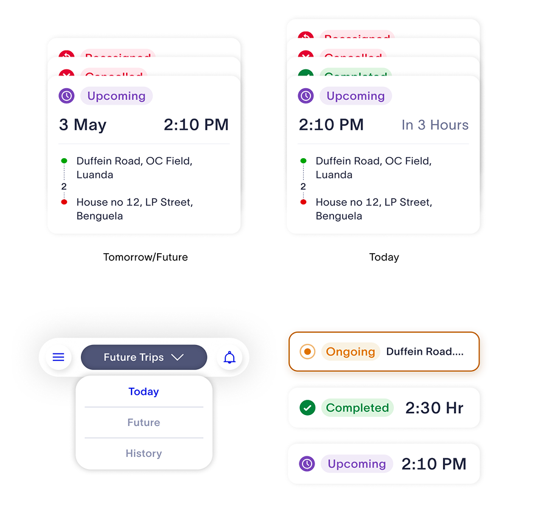
On the other hand the trip details page has all the necessary informations.
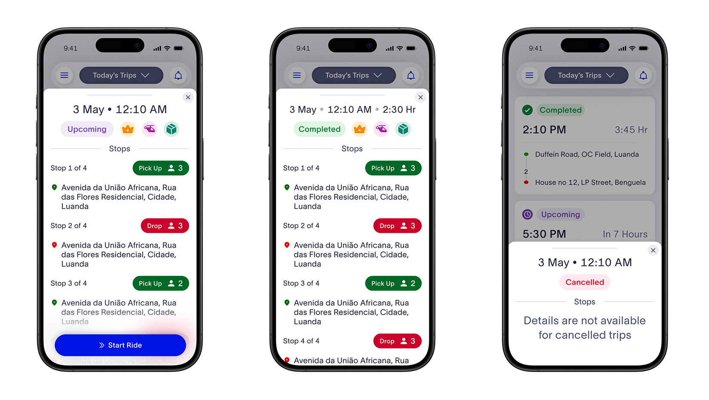
The trip details page is designed to provide comprehensive information about the trip, including pickup and drop-off locations, passenger details, and any special instructions. This allows drivers to have all the necessary information at their fingertips when they need it, without overwhelming them with too much information on the main screen.
Reflection
This project reinforced how critical experiences demand interfaces where affordances adapt to the user’s context, state, and attention.
Working on this project constantly reinforced the idea of putting myself in the driver’s shoes. Every design decision was shaped by the real-world constraints drivers face every day, pushing me to continuously rethink interactions through the lens of their context, attention, and safety.
However, I also recognize that the lack of primary user research and usability testing limited the depth of insights and opportunities for refinement. Nevertheless, I see this project as a valuable learning experience that strengthened my understanding of designing for critical, context-driven mobility experiences.
Cover images are from Unsplash.com
Content on the UI screens have been changed to maintain confidentiality.